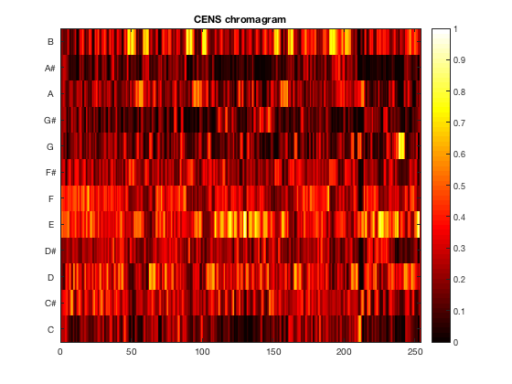
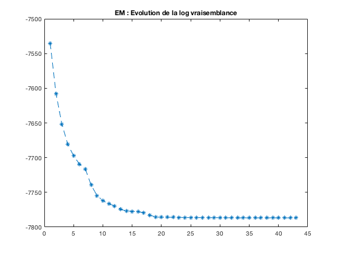
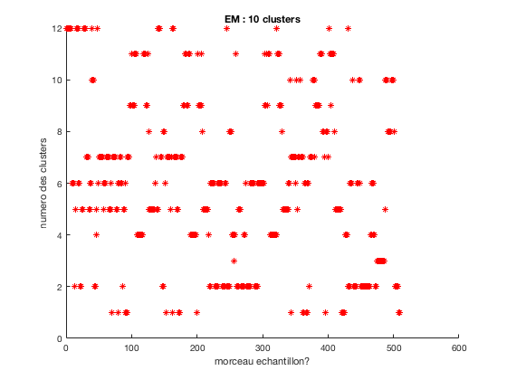

Contents
clear all
close all
clc
Compression Audio PAO 2017: BAERT Gaetan, QUEFFELEC Octave
Etapes Compression
ETAPE 1 : CHROMA
filename = 'AC_DC_Back_In_Black_Official_Video_.wav';
[f_audio,sideinfo] = wav_to_audio('', '', filename);
[donnees, fs]=audioread(filename);
shiftFB = estimateTuning(f_audio,[],sideinfo);
paramPitch.winLenSTMSP = 4410;
paramPitch.shiftFB = shiftFB;
paramPitch.visualize = 0;
[f_pitch,sideinfo] = ...
audio_to_pitch_via_FB(f_audio,paramPitch,sideinfo);
paramCP.applyLogCompr = 0;
paramCP.visualize = 0;
paramCP.inputFeatureRate = sideinfo.pitch.featureRate;
[f_CP,sideinfo] = pitch_to_chroma(f_pitch,paramCP,sideinfo);
paramCLP.applyLogCompr = 1;
paramCLP.factorLogCompr = 100;
paramCLP.visualize = 0;
paramCLP.inputFeatureRate = sideinfo.pitch.featureRate;
[f_CLP,sideinfo] = pitch_to_chroma(f_pitch,paramCLP,sideinfo);
paramCENS.winLenSmooth = 21;
paramCENS.downsampSmooth = 5;
paramCENS.visualize = 1;
paramCENS.inputFeatureRate = sideinfo.pitch.featureRate;
[f_CENS,sideinfo] = pitch_to_CENS(f_pitch,paramCENS,sideinfo);
Computing subbands and STMSP for all pitches: (21-108): 108

ETAPE 2 : clustering EM
nbclusters = 12;
X =f_CENS' ;
dim = size(X, 2);
covar_type = 'full';
mixgauss = gmm(dim, nbclusters, covar_type);
options = foptions;
options(1) = 0;
initKmeans = 1;
if initKmeans
options(14) = 2;
mixgauss = gmminit(mixgauss, X, options);
else
N = size(X, 1);
index = randperm(N);
mixgauss.centres = X(index(1:nbclusters), :);
end
M = distancegen(X, mixgauss.centres);
clusters = affectation(X,mixgauss.centres,nbclusters);
options(14) = 150;
[mixgauss, ~, logvraisemblance] = gmmem(mixgauss, X, options);
figure(2)
plot(logvraisemblance, '*--'), title('EM : Evolution de la log vraisemblance')
probapost = gmmpost(mixgauss, X);
[~, clusters] = max(probapost, [],2);
n=size(clusters,1);
figure();
title('EM : 10 clusters')
xlabel('morceau echantillon?')
ylabel('numero des clusters')
hold on
for i=1:n
plot(i,clusters(i),'*r');
end
hold off
max it mess
 
ETAPE 3 : Compression en appliquant la dct
nbechant = size(X, 1);
resteDernierEchant=rem(max(length(donnees)),nbechant-1);
tailleEchant=int64(floor(max(length(donnees-resteDernierEchant))/(nbechant-1)));
resteDernierEchant = max(length(donnees))-tailleEchant*(nbechant-1);
for i=1:2:2*(nbechant-1)
Echant(:,i)=donnees(((i-1)/2)*tailleEchant+1:((i+1)/2)*tailleEchant,1);
Echant(:,i+1)=donnees(((i-1)/2)*tailleEchant+1:((i+1)/2)*tailleEchant,2);
end
dernierEchant=donnees(max(length(donnees))-resteDernierEchant+1:length(donnees),:);
inputSoustraction_i=[];
Mmoy=[];
clusters=clusters(1:length(clusters)-1);
clustersLR=[];
for i=1:length(clusters)
clustersLR=[clustersLR;clusters(i);clusters(i)];
end
for i =1:nbclusters
cluster_i=(dct(Echant(:,find(clustersLR==i))));
moyCluster_i = mean(cluster_i,2);
Mmoy=[Mmoy moyCluster_i];
soustraction_i=cluster_i-(ones(1,size(cluster_i,2))'*moyCluster_i')';
inputSoustraction_i=[inputSoustraction_i; reshape(soustraction_i,[],1)];
end
inputSoustraction_i_avecDernierEchant=[inputSoustraction_i; dct(dernierEchant(:,1));dct(dernierEchant(:,2))];
ETAPE 4 : Entete du fichier compresse
freq=int16([fs]);
nechant=int16([nbechant]);
taillech=int16([tailleEchant]);
nbclusters=int16([nbclusters]);
maxdct = max(int16(ceil(max(max(inputSoustraction_i_avecDernierEchant)))),int16(ceil(max(max(Mmoy)))));
MmoyR=int16([(reshape(Mmoy,[],1))*double(32767/maxdct)]);
Vclusters=int16([clustersLR]);
entete=[freq;nechant;taillech;nbclusters;MmoyR;Vclusters;maxdct];
inputSoustraction_i_avecDernierEchant = int16(inputSoustraction_i_avecDernierEchant.*double(32767/maxdct));
input=[entete;inputSoustraction_i_avecDernierEchant];
ETAPE 5 : Ecriture des donnees compressees
fileID = fopen('input.wav','w');
InputD = fwrite(fileID,input,'int16');
fclose(fileID);